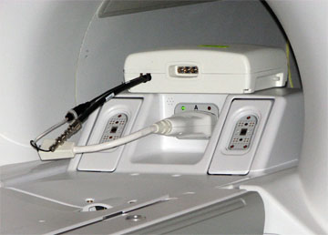

Illustration 16: Delrin Button on T/R Switch

Illustration 15: Carriage Assembly Run to Rear of Magnet

| NOTE: | The Delrin button at the side of the switch must be pushed
to disengage the T/R Switch from the LPCA rails. Illustration 16: Delrin Button on T/R Switch
|